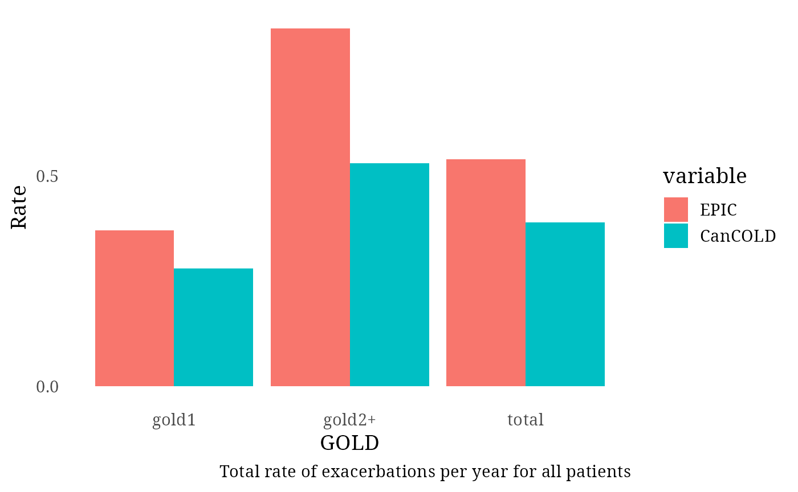
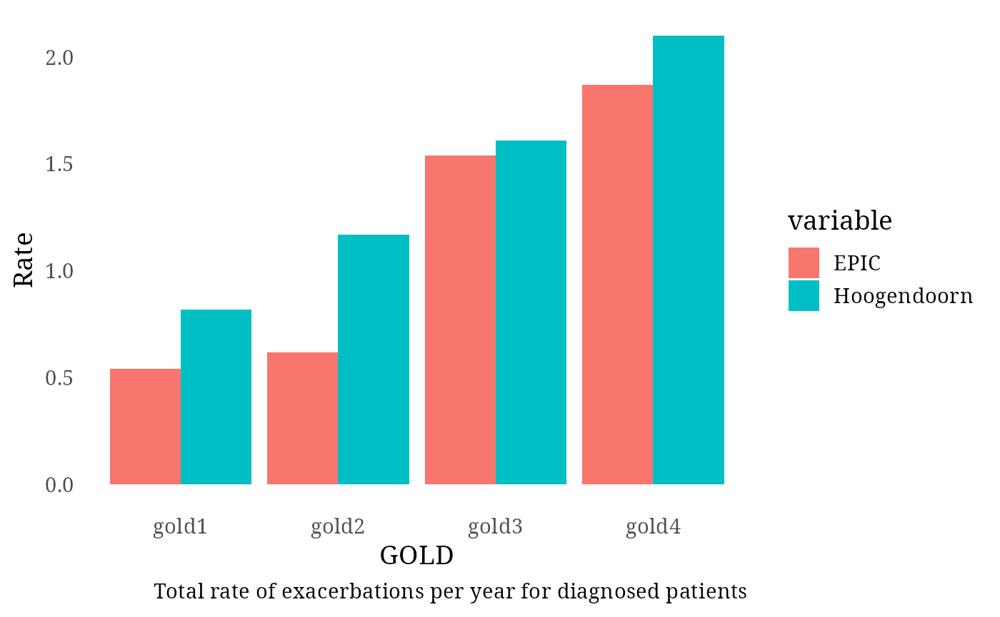
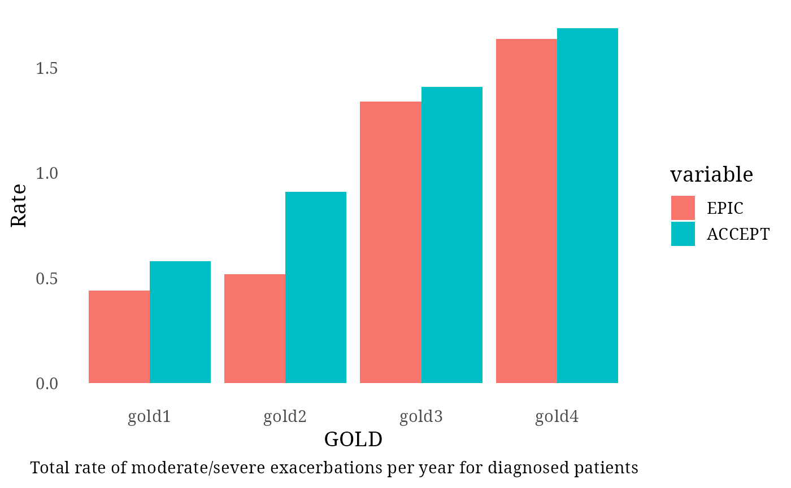
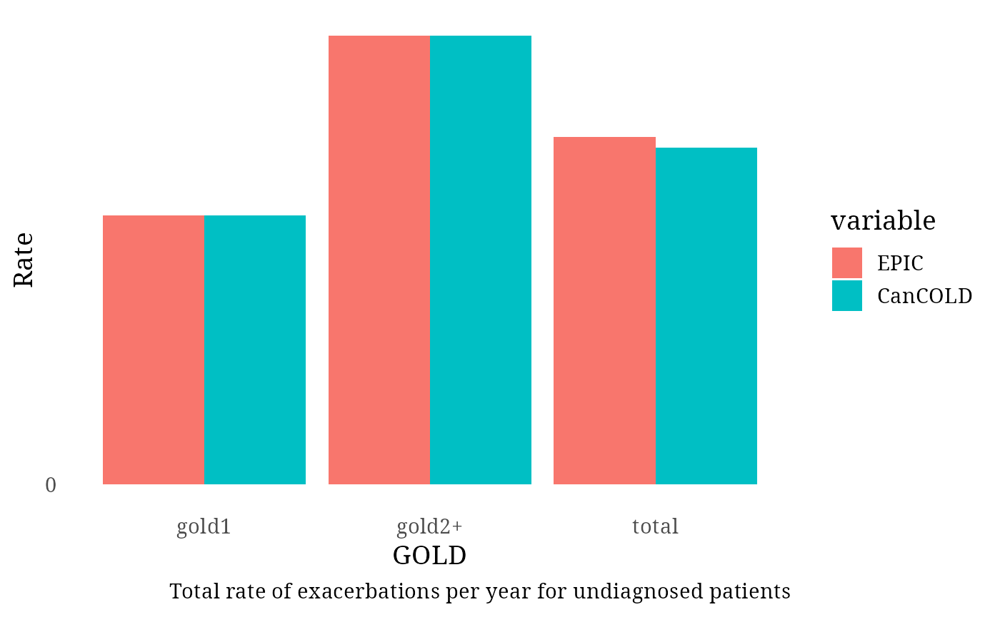
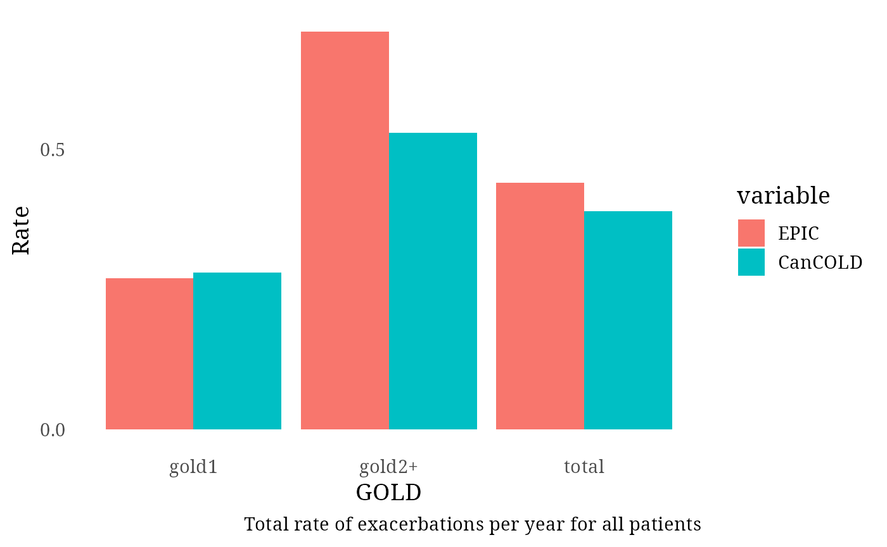
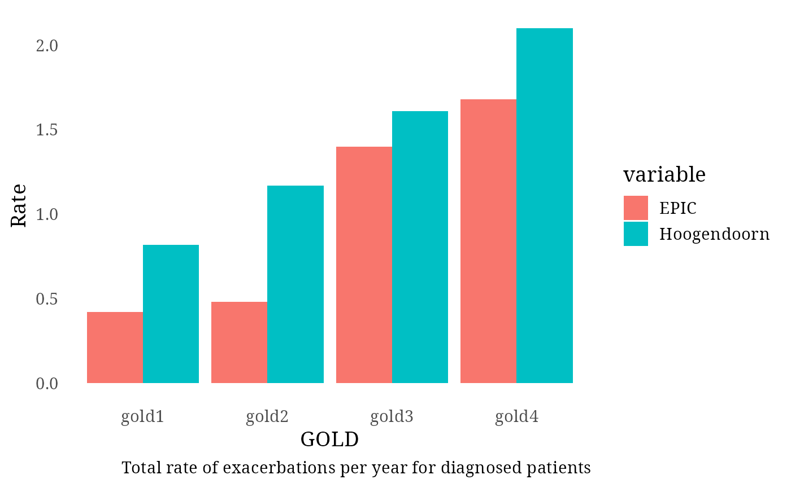
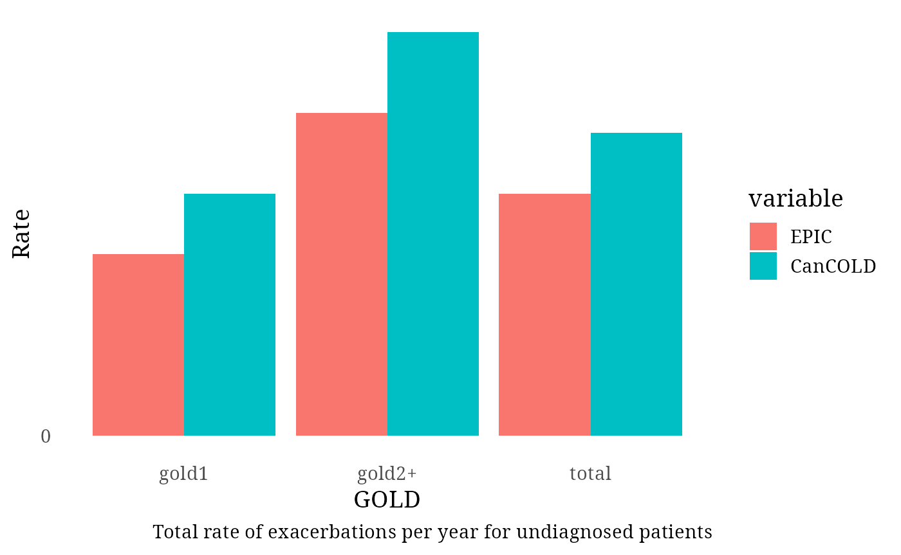

RecalibratingEPIC
RecalibratingEPIC.RmdPrevious Calibration
Assessing calibration of exacerbations with previous EPIC’s (v0.31.3) equations:
inputs <- get_input()$values
inputs$exacerbation$ln_rate_betas = t(as.matrix(c(intercept = -3.4, female = 0, age = 0.04082 * 0.1, fev1 = -0, smoking_status = 0, gold1 = 1.4 , gold2 = 2.0 , gold3 = 2.4 , gold4 = 2.8 , diagnosis_effect = 0.9)))
validate_exacerbation(5e4, inputs)
#> Initializing the session
#> Terminating the session
#> Exacerbation Rates per GOLD stages for all patients:
#> exacRateGOLDI = 0.23
#> exacRateGOLDII = 0.39
#> exacRateGOLDIII = 0.53
#> exacRateGOLDIV = 0.62
#> Total rate of exacerbation in all patients (0.39 per year in CanCOLD): 0.35
#> Is the rate of severe and very severe exacerbations around 477 per CIHI?
#> Average rate during 20 years: 227.37
#> Rate in 2017: 169.74
#> Total rate of exacerbation in diagnosed patients (1.5 per year in Hoogendoorn): 0.41


#> Total rate of exacerbation in undiagnosed patients (0.30 per year in CanCOLD): 0.26This equation for exacerbations included a term for diagnosis. As a result, whether a person was diagnosed or not would affect the exacerbation rates, which does not have causal face validity, and is particularly undesirable for case detection studies that assess diagnosis.
If we remove the diagnosis term and go back to the previous calibration, it will look like this:
inputs$exacerbation$ln_rate_betas <- t(as.matrix(c(intercept = 1.7, female = 0, age = 0.04082 * 0.1, fev1 = -1.5, smoking_status = 0, gold1 = 0.6 , gold2 = 0.35 , gold3 = 0.08 , gold4 = -0.35 , diagnosis_effect = 0)))
validate_exacerbation(5e4, inputs)
#> Initializing the session
#> Terminating the session
#> Exacerbation Rates per GOLD stages for all patients:
#> exacRateGOLDI = 0.45
#> exacRateGOLDII = 0.8
#> exacRateGOLDIII = 1.34
#> exacRateGOLDIV = 1.67
#> Total rate of exacerbation in all patients (0.39 per year in CanCOLD): 0.73
#> Is the rate of severe and very severe exacerbations around 477 per CIHI?
#> Average rate during 20 years: 527.87
#> Rate in 2017: 499.92
#> Total rate of exacerbation in diagnosed patients (1.5 per year in Hoogendoorn): 1.07


#> Total rate of exacerbation in undiagnosed patients (0.30 per year in CanCOLD): 0.47The following recalibrations were assesses and Recalibration 5 was
implemented in epicUS v0.35.0
Recalibration 1:
Let’s try to improve that by lowering GOLD coefficients:
inputs$exacerbation$ln_rate_betas <- t(as.matrix(c(intercept = 1.7, female = 0, age = 0.04082 * 0.1, fev1 = -1.5, smoking_status = 0, gold1 = 0.3 , gold2 = 0.1 , gold3 = 0.08 , gold4 = -0.35 , diagnosis_effect = 0)))
validate_exacerbation(5e4, inputs)
#> Initializing the session
#> Terminating the session
#> Exacerbation Rates per GOLD stages for all patients:
#> exacRateGOLDI = 0.35
#> exacRateGOLDII = 0.63
#> exacRateGOLDIII = 1.31
#> exacRateGOLDIV = 1.54
#> Total rate of exacerbation in all patients (0.39 per year in CanCOLD): 0.61
#> Is the rate of severe and very severe exacerbations around 477 per CIHI?
#> Average rate during 20 years: 472.2
#> Rate in 2017: 367.86
#> Total rate of exacerbation in diagnosed patients (1.5 per year in Hoogendoorn): 0.9


#> Total rate of exacerbation in undiagnosed patients (0.30 per year in CanCOLD): 0.37Recalibration 2:
We can now lower GOLD2 coefficient even more and perhaps increase smoking coefficient to compensate for the loss in the diagnosed patients.
inputs$exacerbation$ln_rate_betas <- t(as.matrix(c(intercept = 1.7, female = 0, age = 0.04082 * 0.1, fev1 = -1.5, smoking_status = 0.5, gold1 = 0.3 , gold2 = 0.05 , gold3 = 0.08 , gold4 = -0.35 , diagnosis_effect = 0)))
validate_exacerbation(5e4, inputs)
#> Initializing the session
#> Terminating the session
#> Exacerbation Rates per GOLD stages for all patients:
#> exacRateGOLDI = 0.37
#> exacRateGOLDII = 0.66
#> exacRateGOLDIII = 1.44
#> exacRateGOLDIV = 1.88
#> Total rate of exacerbation in all patients (0.39 per year in CanCOLD): 0.65
#> Is the rate of severe and very severe exacerbations around 477 per CIHI?
#> Average rate during 20 years: 498.59
#> Rate in 2017: 427.16
#> Total rate of exacerbation in diagnosed patients (1.5 per year in Hoogendoorn): 0.97


#> Total rate of exacerbation in undiagnosed patients (0.30 per year in CanCOLD): 0.39Recalibration 3:
Let’s lower GOLD2 dramatically:
inputs$exacerbation$ln_rate_betas <- t(as.matrix(c(intercept = 1.7, female = 0, age = 0.04082 * 0.1, fev1 = -1.5, smoking_status = 0.5, gold1 = 0.3 , gold2 = -0.5 , gold3 = 0.08 , gold4 = -0.35 , diagnosis_effect = 0)))
validate_exacerbation(5e4, inputs)
#> Initializing the session
#> Terminating the session
#> Exacerbation Rates per GOLD stages for all patients:
#> exacRateGOLDI = 0.37
#> exacRateGOLDII = 0.39
#> exacRateGOLDIII = 1.55
#> exacRateGOLDIV = 1.74
#> Total rate of exacerbation in all patients (0.39 per year in CanCOLD): 0.54
#> Is the rate of severe and very severe exacerbations around 477 per CIHI?
#> Average rate during 20 years: 431.3
#> Rate in 2017: 390.77
#> Total rate of exacerbation in diagnosed patients (1.5 per year in Hoogendoorn): 0.83


#> Total rate of exacerbation in undiagnosed patients (0.30 per year in CanCOLD): 0.29Recalibration 4:
Bring GOLD2 up a bit:
inputs$exacerbation$ln_rate_betas <- t(as.matrix(c(intercept = 1.7, female = 0, age = 0.04082 * 0.1, fev1 = -1.5, smoking_status = 0.5, gold1 = 0.3 , gold2 = -0.2 , gold3 = 0.08 , gold4 = -0.35 , diagnosis_effect = 0)))
validate_exacerbation(5e4, inputs)
#> Initializing the session
#> Terminating the session
#> Exacerbation Rates per GOLD stages for all patients:
#> exacRateGOLDI = 0.35
#> exacRateGOLDII = 0.51
#> exacRateGOLDIII = 1.36
#> exacRateGOLDIV = 1.65
#> Total rate of exacerbation in all patients (0.39 per year in CanCOLD): 0.57
#> Is the rate of severe and very severe exacerbations around 477 per CIHI?
#> Average rate during 20 years: 444.26
#> Rate in 2017: 418.49
#> Total rate of exacerbation in diagnosed patients (1.5 per year in Hoogendoorn): 0.86


#> Total rate of exacerbation in undiagnosed patients (0.30 per year in CanCOLD): 0.33Recalibration 5:
GOLD2 back a bit again.
inputs$exacerbation$ln_rate_betas <- t(as.matrix(c(intercept = 1.7, female = 0, age = 0.04082 * 0.1, fev1 = -1.5, smoking_status = 0.5, gold1 = 0.3 , gold2 = -0.3 , gold3 = 0.08 , gold4 = -0.35 , diagnosis_effect = 0)))
validate_exacerbation(5e4, inputs)
#> Initializing the session
#> Terminating the session
#> Exacerbation Rates per GOLD stages for all patients:
#> exacRateGOLDI = 0.37
#> exacRateGOLDII = 0.46
#> exacRateGOLDIII = 1.35
#> exacRateGOLDIV = 1.63
#> Total rate of exacerbation in all patients (0.39 per year in CanCOLD): 0.54
#> Is the rate of severe and very severe exacerbations around 477 per CIHI?
#> Average rate during 20 years: 430.4
#> Rate in 2017: 422.37
#> Total rate of exacerbation in diagnosed patients (1.5 per year in Hoogendoorn): 0.82
#> Total rate of exacerbation in undiagnosed patients (0.30 per year in CanCOLD): 0.31Recalibration 6:
Reducing intercept and adding to the smoking term.
inputs$exacerbation$ln_rate_betas <- t(as.matrix(c(intercept = 1.4, female = 0, age = 0.04082 * 0.1, fev1 = -1.5, smoking_status = 0.7, gold1 = 0.3 , gold2 = -0.3 , gold3 = 0.08 , gold4 = -0.35 , diagnosis_effect = 0)))
validate_exacerbation(5e4, inputs)
#> Initializing the session
#> Terminating the session
#> Exacerbation Rates per GOLD stages for all patients:
#> exacRateGOLDI = 0.27
#> exacRateGOLDII = 0.37
#> exacRateGOLDIII = 1.19
#> exacRateGOLDIV = 1.49
#> Total rate of exacerbation in all patients (0.39 per year in CanCOLD): 0.44
#> Is the rate of severe and very severe exacerbations around 477 per CIHI?
#> Average rate during 20 years: 365.52
#> Rate in 2017: 346.62
#> Total rate of exacerbation in diagnosed patients (1.5 per year in Hoogendoorn): 0.68
#> Total rate of exacerbation in undiagnosed patients (0.30 per year in CanCOLD): 0.24